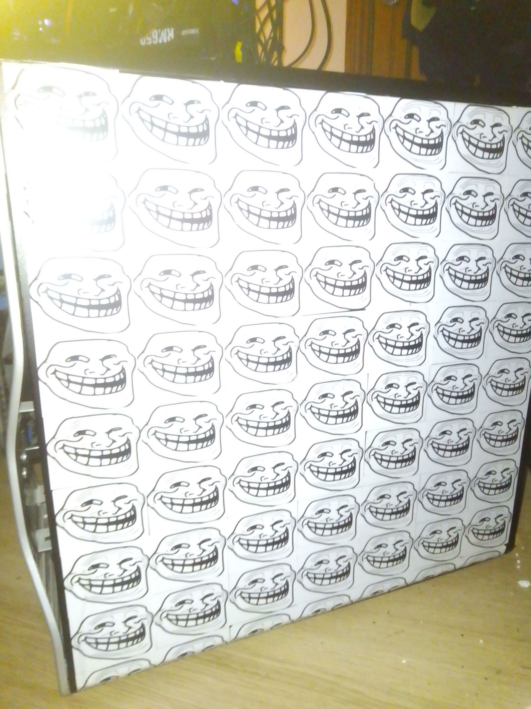
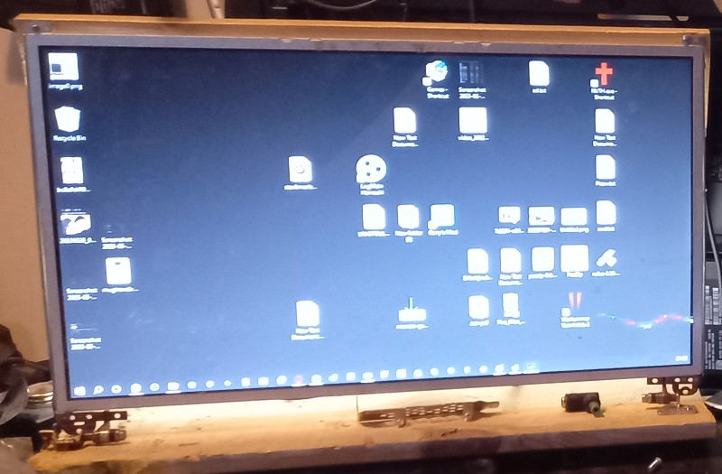
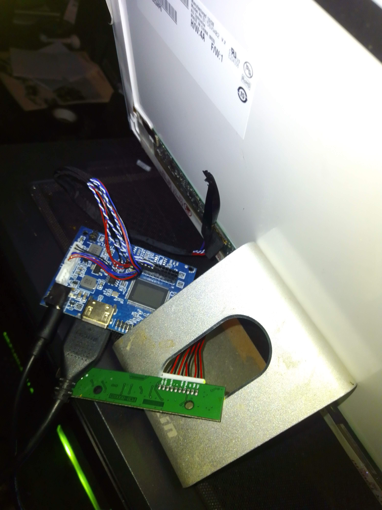
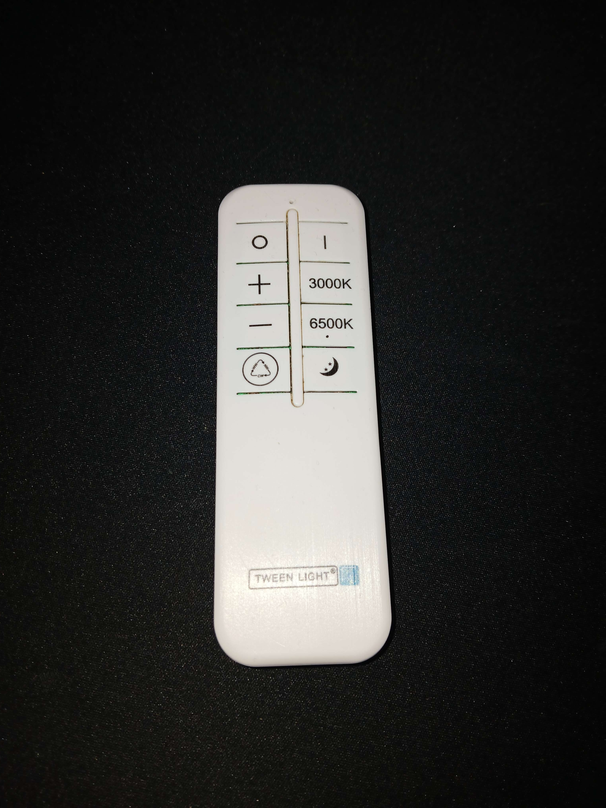
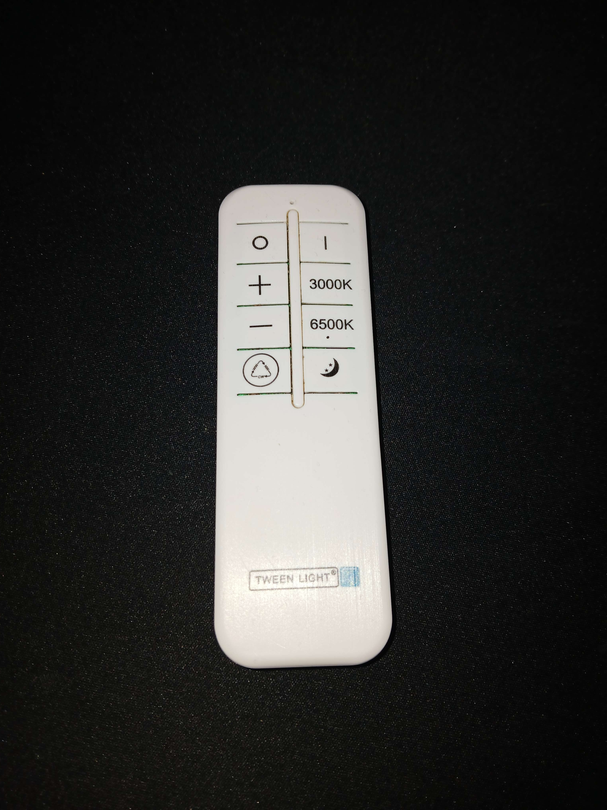

More Projects
NAS Project
Here is my NAS Server project that I did a few years ago.
I used an old Dell desktop computer, old hard drives I had salvaged
and bought other new components for example its RAM and a few
larger 4 TB hard drives for it.
Note the video is 4 years old and a few modifications have been
made to it since.
Specs :
OS : True NAS
CPU : Intel Xeon 3600
RAM : 24 GB DDR3
Storage : 24 TB HDD | 250GB SSD
GPU : RX 350
Though the specs arent the craziest , this NAS server was meant to be an experiment, and it stills works completely fine although there have been issues with ip addresses etc.

Custom Monitor
This was my custom monitor that I had made from an old broken laptops monitor and had fitted it up with a new control board. I had used wood to make the frame of the monitor and at the end since I had space between the actual backboard and frame , it had in my opionion a really cool "Glow effect" around the monitor.
 
Flashing ceiling light
This project is about creating an added feature to my ceiling light. The feature would be to add an embedded control panel , that allows it for to flash at a set time as fast and "annoyingly" as possible. The whole reason for this added feature is to wake me up more effectively, since I have a really tough time waking up in the mornings
 
